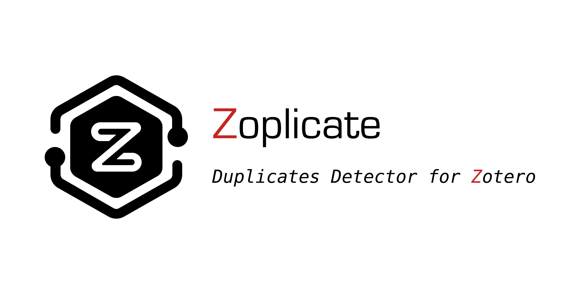
👉


* Many thanks to Patrick O’Brien for the German tutorial.
** Many thanks to Frédérique Flamerie for the French tutorial.
A plugin that does one thing only: Detect and Manage duplicate items in  .
.
Main Features
- Duplicates Detection
- Detects if newly imported items are duplicates of existing ones in the Zotero library.
- You can choose which version of duplicate items to use as the master item and merge them.
- The actions you can take:
- Keep New: Set the new item as the master item and merge the duplicates.
- Keep Old: Set the existing item as the master item and merge the duplicates.
- Keep All: Keep both the new item and the existing item.
- Merge Manually: Go to the Duplicate Items Panel and merge the duplicate item manually.
- Auto-Bulk Merge
- Merges all duplicate items in the library automatically.
- Introduced in Version 2.0.0.
- Non-duplicates Management
- Allows marking items as “Non-duplicates” if mistakenly identified as duplicates by Zotero.
- Supports exporting and importing non-duplicate decisions for cross-device transfer.
- Introduced in Version 3.0.0.
- Show Duplicate Statistics
- Append the duplicate count on the label of Duplicate Items pane.
- Introduced in Version 2.3.0.
If you find this project helpful, please consider giving it a star ⭐. It would be a great encouragement for me!
[!IMPORTANT]
Zoplicate does NOT delete the duplicate items arbitrarily.
Instead, it extracts the useful information from the duplicate items and merges them into the retained item.
It makes some improvements based on the official detection and merging methods of Zotero.
Changelog
v5.0.1
Click here to show more.
This hotfix resolves the Zotero sync error reported as Invalid setting 'zoplicate-nonDuplicatePairs':
- 🐛 FIX!: Disabled the v5.0.0 non-duplicate-pair sync path that wrote an unsupported custom key to
Zotero.SyncedSettings. - 🧹 CLEANUP!: Zoplicate now removes the legacy
zoplicate-nonDuplicatePairslocal synced setting on startup so Zotero stops retrying the invalid upload. - 🗄️ NOTE!: Non-duplicate pairs continue to be stored locally; cross-device syncing for these pairs is disabled until a supported storage path is available.
v5.0.0
Click here to show more.
This version focuses on Zotero 9–10 compatibility and data integrity work:
- ✨ NEW!: Zoplicate now targets Zotero 9 and 10 (
9.0through10.0.*) and the release manifest includes Zotero 10. - ✨ NEW!: Non-duplicate pairs can now be synced through
Zotero.SyncedSettingswith key-based storage for cross-device portability. - 🧬 CHANGE!: The duplicate detection, dialog rendering, menu registration, window handling, and plugin lifecycle code were reviewed for the Zotero 9 and 10 runtimes.
- 🐛 FIX!: Added local DB schema versioning, safer cleanup for merged/deleted items, startup hydration, and conflict-safe union merge for synced non-duplicate pairs.
- ✅ TEST!: Expanded the automated test suite for duplicate detection, non-duplicate sync, hydration, cleanup, lifecycle, menus, and bulk merge flows.
v4.0.0
Click here to show more.
Many thanks to all the contributors and users who liked, reported issues, and provided valuable feedback! ❤️
We are now supporting Zotero 8!
v3.0.8
Click here to show more.
In this version, we have made the following changes:
- 🐛 FIX!: We have fixed the bug that caused the dialog not to open again when importing duplicate items.
- Thanks to pascaloettli for reporting this bug in issue #147.
- Thanks to “如梦江南” for reporting this bug on RedNote.
- 🐛 FIX!: We have fixed the dialog styling issue in dark mode.
- Thanks to pascaloettli for reporting this bug in issue #146.
v3.0.6
Click here to show more.
In this version, we have updated the dependencies and adapted to the latest version of Zotero.
Thanks to pascaloettli for the feedback in issue #131.
v3.0.5
Click here to show more.
In this version, we have made the following changes:
- 🐛 FIX!: We have fixed the bug that caused the sync error.
- Thanks to dstillman for reporting this issue in issue #124.
- 🐛 FIX!: We have optimized the UI of context menu.
- Thanks to dschaehi for reporting this issue in issue #119.
- 🐛 FIX!: We have optimized the UI styling of bulk merge buttons.
- Thanks to vancleve for reporting this issue in issue #120.
v3.0.4
Click here to show more.
In this version, we have made the following changes:
- 🐛 FIX!: We have fixed the bug that caused the UI blocked when selecting too many items and opening the context menu.
- Thanks to zzlb0224, pencilheart and dschaehi for reporting this bug in issue #94 and issue #119 respectively.
- 🐛 FIX!: We have optimized the plugin lifecycle which may cause the plugin to load multiple preference settings on macOS.
- Thanks to WangYe661 and pencilheart for reporting this bug in issue #81.
- 🐛 FIX!: We have optimized database operations to reduce the risk of data loss.
v3.0.3
Click here to show more.
In this version, we have made the following changes:
- 🐛 FIX!: We have fixed the bug that caused the attachment to be lost when merging duplicate items.
- Thanks to tommyhosman for reporting this bug in issue #43.
- Thanks to csdaboluo for reporting this bug in issue #51.
- 🐛 FIX!: Zoplicate will now ignore the Feed items when detecting duplicates.
- Thanks to Raphael-Hao for reporting this bug in issue #54.
- 🐛 FIX!: We have fixed the bug that caused the detection dialog blocking the main thread.
- 🐛 FIX!: We have fixed the bug that caused the deleted items to be showing in NonDuplicates panel.
- 🐛 FIX!: Now, the NonDuplicates panel won’t show up when clicking attachment items.
- ✨ NEW!: We added a prompt to remind the duplicates when Zotero is in background.
Click here to show more.
v3.0.2
Click here to show more.
In this version, we have made the following changes:
- 🐛 FIX!: We have fixed the progress window icon bug in Zotero 7.0.0-beta.77.
- 🧬 CHANGE!: We have updated the style of duplicate detection dialog.
- 🧬 CHANGE!: We have updated the icon style in preference pane.
- 🧬 CHANGE!: Items with different
itemTypewill not be considered as duplicates.
v3.0.1
Click here to show more.
In this version, we have made the following changes:
- 🧬 CHANGE!: We have updated the UI of buttons in the duplicate pane.
- 🐛 FIX!: We have optimized the performance of duplicate search and detection.
v3.0.0
Click here to show more.
In this version, we have made the following changes:
- 🐛 FIX!: We have fixed a memory leak bug that caused the app to freeze when editing PDF annotations.
- Thanks vancleve and pencilheart for reporting this bug in issue #30 and issue #31 respectively.
- ✨ NEW!: We have added the Non-duplicates functionality.
- You can mark items as Non-duplicates when they are mistakenly identified as “duplicates” by Zotero.
- Selecting two “false duplicates”, you can find the
They are NOT duplicatesmenu items in the context menu.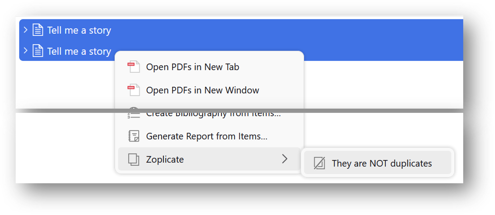
- You can also find the
They are NOT duplicatesbutton in theDuplicate Itemspanel. - For more details, please see Non-duplicates section below.
- Thanks dschaehi for the discussion in issue #25.
v2.3.0
Click here to show more.
In this version, we have made the following changes:
- ✨ NEW!: We have added an option to show the duplicate count on the left collection pane.
- You can find the option in the
Zoplicatetab in the settings. -
When your mouse hovers over the Duplicate Items entry, a tooltip will show the duplicate statistics.
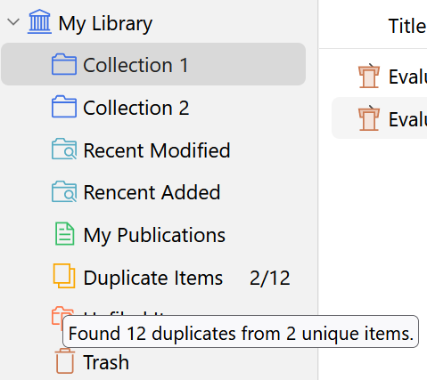
-
The duplicate count will be updated automatically. You can also find the Refresh Duplicate Count menu to update the count manually.
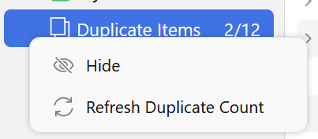
- Thanks Apollo7777777’s idea mentioned in discussion #18
- You can find the option in the
- 🐛 FIX!: We have fixed a bug that caused the dialog to be too narrow when the title is short.
- 🐛 FIX!: We have fixed a bug that caused the
Bulk Mergeicons to not maintain aspect ratios.
v2.2.0
Click here to show more.
In this version, we have made the following changes:
v2.1.0
Click here to show more.
In this version, we have made the following changes:
- ✨ NEW!: We have added the Suspend and Restore functionality (Only available in Zotero 7 now).
- Please see Bulk Merge section below for more details.
- 🧬 CHANGE!: We have changed the behavior of Keep Others action.
- Previously, the Keep Others action will delete the last imported item and save ALL the rest existing items.
- Now, the action will Merge the existing items based on the Master Item preferences in Settings.
- 🐛 FIX!: We have fixed a bug that caused the tags could not be loaded correctly in v2.0.0.
- Thanks ChinJCheung for reporting this bug in issue #10.
v2.0.0
Click here to show more.
In this version, we have made the following changes:
- ✨ NEW!: We have added the Bulk Merge functionality (Only available in Zotero 7 now).
- Bulk Merge: Merge all duplicate items in the library automatically.
- You can find the Bulk Merge button in the
Duplicate Itemspanel. - Please see Bulk Merge section below for more details.
- Thanks csdaboluo’s idea mentioned in issue #8.
- 🐛 FIX!: We have fixed a bug that caused the dialog height to be too high when importing duplicate items in bulk.
- 🐛 FIX!: Now Zotero will auto-select the remained item after merging duplicate items.
- Thanks pencilheart’s report in issue #7.
v1.1.0
Click here to show more.
In this version, we have made the following changes:
-
🧬 CHANGE!: We have changed the processing method of duplicate items.
Previously, we use the
Trashmethod to process duplicate items, i.e., delete the duplicate items. However, this method will cause the loss of some information of the duplicate items.- E.g., notes, tags, collections, attachments.
In this version, we use the
Mergemethod to process duplicate items. This method will copy all the aforementioned information to the retained item, and then delete the duplicate items.- NOTE: If you are using ZotFile, the
Mergemethod will copy the file link of the duplicate items to the retained item. - However, users relying on Zotero’s default attachment storage may encounter duplication issues if the newly imported item contains attachments.
- This is a known potential problem in Zotero, as detailed in Zotero Documentation - Duplicate Detection.
Thanks ChinJCheung’s idea mentioned in issue #5.
Install
From GitHub
- Zoplicate 5 targets Zotero 9 and 10 (
9.0through10.0.*). - Visit the latest release page and download the latest
zoplicate.xpifile.- If you are using FireFox, right-click on the link of the XPI file and select “Save As…”.
- Then, in Zotero, click
Tools->Pluginsand drag the.xpionto the Plugins window.
From Add-on Market Plugin for Zotero
Additional third-party plugin is required.
- Install Add-on Market for Zotero from here.
- Search
Zoplicatein the Add-on Market and install it.
通过 Zotero 插件商店 安装 (For Chinese Users)
- 前往 Zotero 插件商店.
- 搜索
Zoplicate然后单击下载按钮。
Usage
Settings
In Zotero, click Edit -> Settings, go to Zoplicate tab, and you will see the settings.
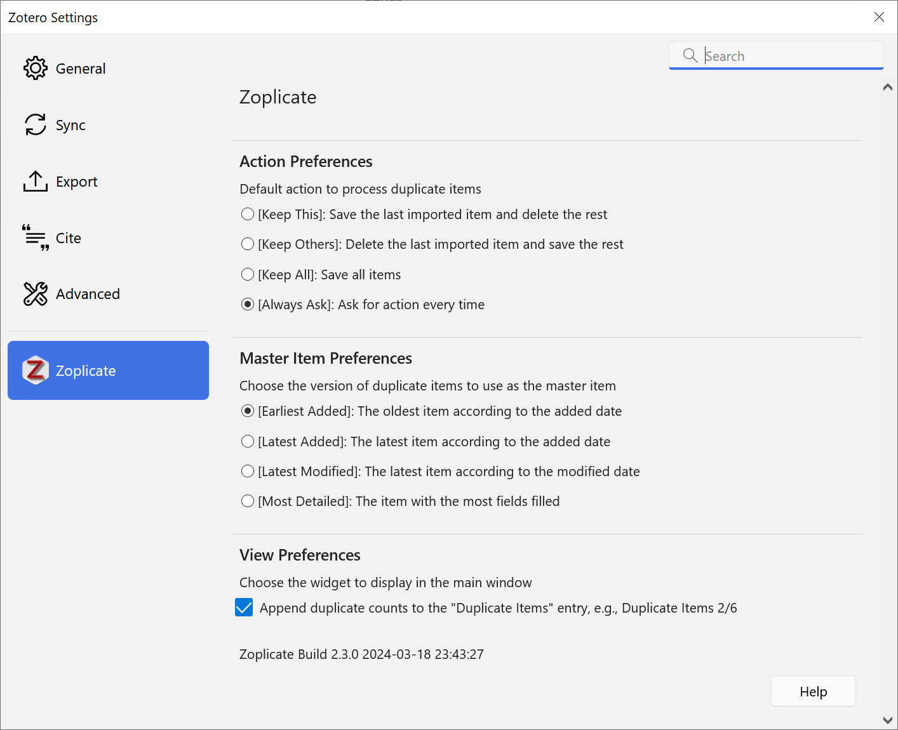
- You can select the actions you want to take when duplicate items are detected.
Always Askis the default option if you have not changed the settings.
- You can select the version of duplicate items to use as the master item.
Earliest Addedis the default option if you have not changed the settings.
- You can export and import non-duplicate decisions in the Data Management section.
- This is useful for transferring non-duplicate records between devices. See Import/Export Non-Duplicates for details.
Duplicate Detection
By default, or you have selected Always Ask in the settings,
a dialog will pop up when you import a new item that is a duplicate of an existing item.
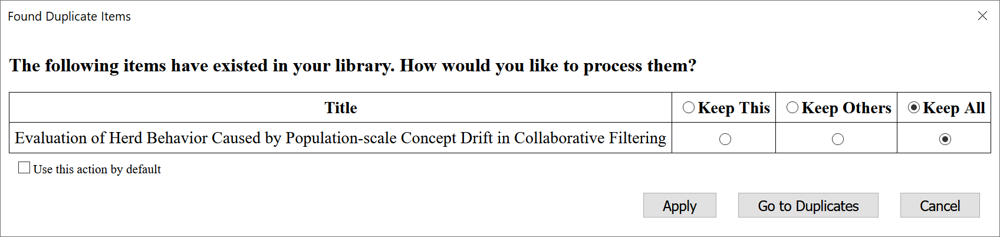
The dialog will show the duplicate items and the actions you can take.
- Select the action you want to take and click Apply to process the duplicate items.
- Click Go to Duplicates to go to the
Duplicate Itemspanel and merge the duplicate items manually. - Click Cancel to dismiss the dialog and save the import of the new item and the existing items.
- Check Use this action by default to remember the selected action in default settings. Then the next time you import a duplicate item, the selected action will be applied automatically.
Multiple Duplicate Items
When you import multiple duplicate items, or import another duplicate item before you process the previous duplicate items, the dialog will show all the duplicate items and the actions you can take.
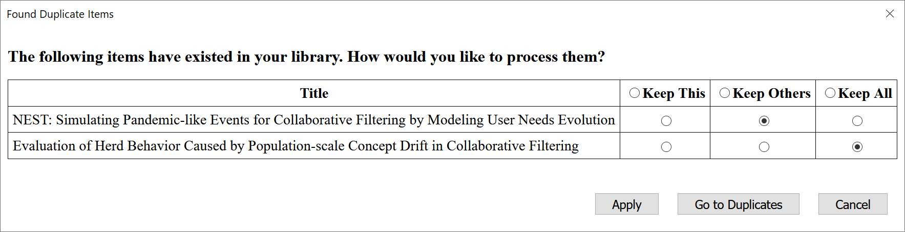
- You can select different actions for different duplicate items.
- Click the header of action columns to select the same action for all duplicate items.
- Use this action by default option will be shown only when you select the same action for all duplicate items.
Bulk Merge
Inspired by csdaboluo’s idea and ZoteroDuplicatesMerger, we have added the Bulk Merge functionality in Version 2.0.0.
In the Duplicate Items panel, you can find the Bulk Merge All Duplicate Items button:
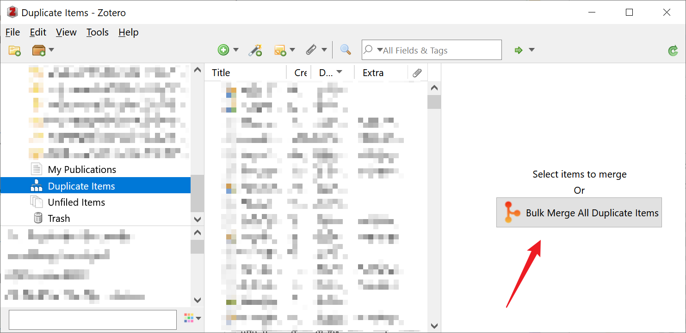
You can also find it when you select one or more duplicate items:
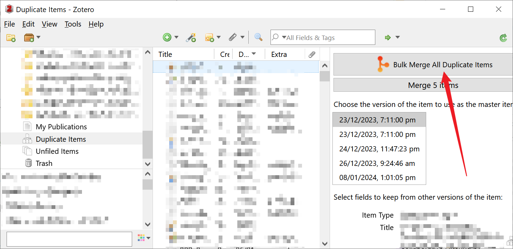
[!WARNING]
- Before clicking the button, please make sure you have properly configured the Master Item preferences in Settings.
- The Bulk Merge functionality will take a while to complete if you have a large number of duplicate items.
You will see the progress of the bulk merge process:
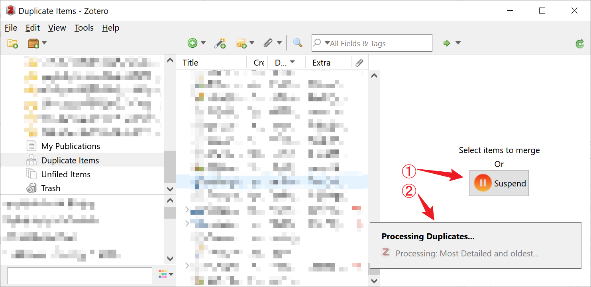
Suspend Bulk Merge
You can click the Suspend button to suspend the bulk merge process.
A dialog will pop up to confirm your action:
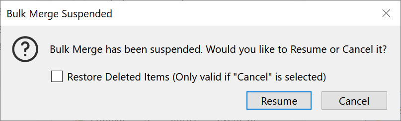
- Click Resume to resume the bulk merge process.
- Click Cancel to cancel the bulk merge process.
- Check Restore Deleted Items to restore the duplicate items that have been merged.
- Note that the Restore action is only effective if you click Cancel.
[!TIP]
If you want to Restore the duplicate items that have been merged, you can go to
Trashpanel and restore them.
- Select the duplicate items you want to restore.
- Click Restore to Library button to process.
Show Duplicate Statistics
Starting from Version 2.3.0, we have added an option to show the duplicate count on the left collection pane.
You can find the option in the Zoplicate tab in the settings.
When your mouse hovers over the Duplicate Items entry, a tooltip will show the duplicate statistics.
The duplicate count will be updated automatically. You can also find the Refresh menu to update the count manually.
Non-duplicates
Starting from Version 3.0.0, we have added the Non-duplicates functionality.
You can mark items as Non-duplicates when they are mistakenly identified as “duplicates” by Zotero.
Selecting an item, you can manage the Non-duplicates items in the side panel:
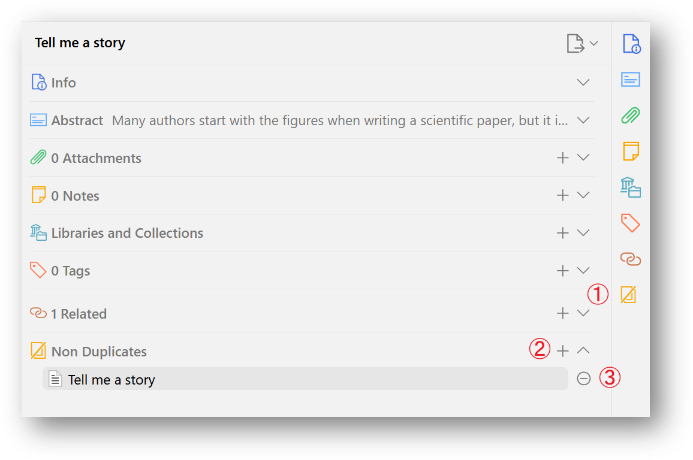
- Click the  button to show the Non-duplicates section.
- Click the + button to add the selected item to the Non-duplicates list.
- Click the - button to remove the selected entry from the Non-duplicates list.
There are some ways to mark and unmark items as Non-duplicates:
Mark as Non-duplicates
- Click the + button to add the selected item to the Non-duplicates list.
- Selecting two “false duplicates”, you can find the
They are NOT duplicatesmenu items in the context menu. - You can also find the
They are NOT duplicatesbutton in theDuplicate Itemspanel.
Unmark as Non-duplicates
- Click the - button to remove the selected entry from the Non-duplicates list.
- Selecting two “non duplicates”, you can find the
They are duplicatesmenu items in the context menu.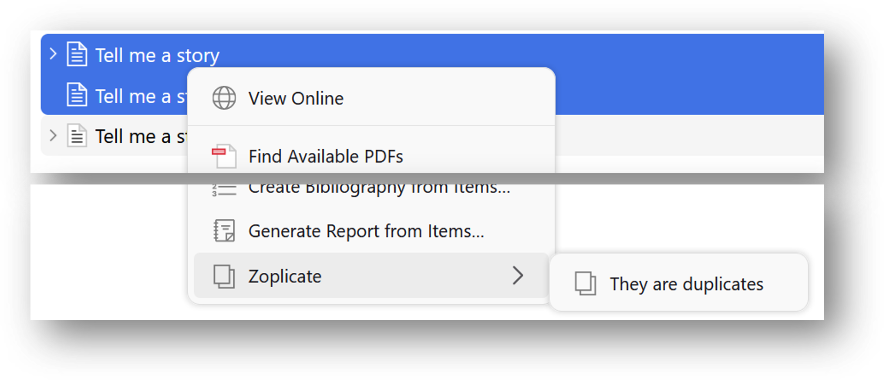
Import/Export Non-Duplicates
Non-duplicate decisions are stored locally and do not sync automatically across devices via Zotero sync. To transfer your non-duplicate records to another device:
- Go to
Edit->Settings->Zoplicate-> Data Management section. - Click Export Non-Duplicates… to save all non-duplicate records to a JSON file.
- Copy the exported file to your other device.
- On the other device, go to the same settings panel and click Import Non-Duplicates… to load the records.
[!NOTE]
- The export file uses stable item keys (not local IDs), so it works correctly across different Zotero installations that share the same synced library.
- Importing is additive — it only adds new records and never removes existing ones. You can safely import the same file multiple times.
- If an item referenced in the export file does not exist on the target device (e.g., not yet synced or deleted), that pair will be skipped.
How to cite
Plain citation
Ma, C. (2026). Zoplicate (v5.0.0) [Software]. Zenodo. https://doi.org/10.5281/zenodo.16986945
BibTeX
@software{zoplicate_16986945,
author = {Ma, Chenglong},
title = {Zoplicate: Detect and manage duplicate items in Zotero},
version = {v5.0.0},
date = {2026-04-16},
doi = {10.5281/zenodo.16986945},
url = {https://github.com/ChenglongMa/zoplicate}
}
Contributing
👋 Welcome to Zoplicate! We’re excited to have your contributions. Here’s how you can get involved:
-
💡 Discuss New Ideas: Have a creative idea or suggestion? Start a discussion in the Discussions tab to share your thoughts and gather feedback from the community.
-
❓ Ask Questions: Got questions or need clarification on something in the repository? Feel free to open an Issue labeled as a “question” or participate in Discussions.
-
🐛 Issue a Bug: If you’ve identified a bug or an issue with the code, please open a new Issue with a clear description of the problem, steps to reproduce it, and your environment details.
-
✨ Introduce New Features: Want to add a new feature or enhancement to the project? Fork the repository, create a new branch, and submit a Pull Request with your changes. Make sure to follow our contribution guidelines.
-
💖 Funding: If you’d like to financially support the project, you can do so by sponsoring the repository on GitHub. Your contributions help us maintain and improve the project.
Acknowledgements
I would like to express my gratitude to the following individuals and organizations for their generous support and contributions to this project:
Sponsors


Usually, a ⭐️ is enough to make me happy. Your sponsorship will help me maintain and improve the project. Also, part of the sponsorship will be donated to the open-source community.
Thank you for considering contributing to Zoplicate. We value your input and look forward to collaborating with you!